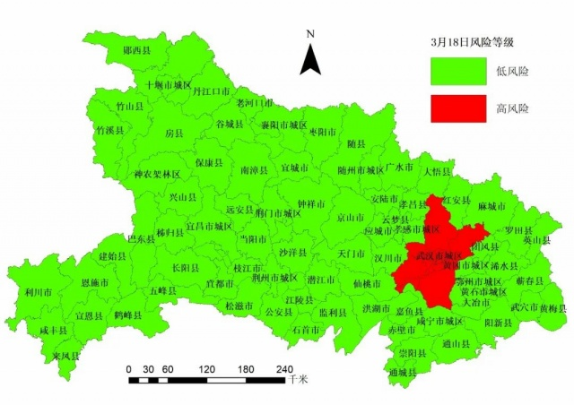
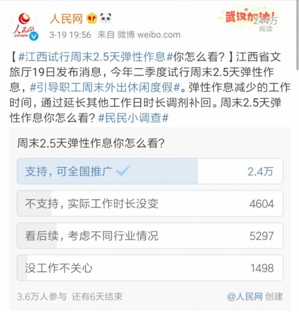

伊朗150万人有发热症状！意大利破4万、美国加州“封城”…
原文链接 备份链接 3月19日晚，央视《新闻1+1》连线中国红十字会志愿专家团队专家马学军。马学军介绍说，在伊朗有一个叫做“网络登记报告”的系统。“据了解，伊朗已经排查了2250万人，其中至少150万人有发热症状。也就是说，现在的伊朗疫 …
叶青武汉日记：李文亮调查与处理结果公布
 5674
5674
来源：正和岛
作者：叶青
03-20正在打榜，当前第2

[
政事儿

新京报社 媒体
](https://archive.ph/o/DHjwX/mp.zhisland.com/wmp/user/personal/other/home?uid=6564053434834616323)
推荐人

1、意大利成为因新冠肺炎死亡人数最多的国家
19日，周四，晴。19日，全国大陆地区新增确诊病例39例，新增死亡病例3例（湖北2例，辽宁1例），新增疑似病例31例。截至19日，全国大陆现有确诊病例6569例（其中重症病例2136例），累计治愈出院病例71150例，累计死亡病例3248例，累计报告确诊病例80967例，现有疑似病例104例。湖北新增确诊病例0例（武汉0例），新增治愈出院病例703例（武汉624例），新增死亡病例2例（武汉2例），现有确诊病例6287例（武汉6118例），其中重症病例2098例（武汉2062例）。累计治愈出院病例58381例（武汉41389例），累计死亡病例3132例（武汉2498例），累计确诊病例67800例（武汉50005例）。新增疑似病例0例（武汉0例），现有疑似病例0例（武汉0例）。19日，新增报告境外输入确诊病例39例（广东14例，上海8例，北京6例，福建3例，天津、辽宁、黑龙江、浙江、山东、广西、四川、甘肃各1例）。截至19日，累计报告境外输入确诊病例228例。截至欧洲中部时间19日10:00时（北京时间19日17:00时），中国以外新冠肺炎确诊病例较前一日增加16498例，达到128665例；中国以外的死亡病例较前一日增加817例，累计达到5536例。中国以外确诊病例数已经超过中国，当天包括中国在内的全球累计确诊209839例。截至当地时间19日18时，意大利累计新冠肺炎确诊病例41035例，24小时新增5322例，累计死亡3405例，成为了因新冠肺炎死亡人数最多的国家。
2、李文亮调查情况通报
中央派出四个调查组，就李文亮事件调查，19日公布了调查情况。2月7日，国家监委成立调查组，就群众反映的涉及李文亮医生的有关情况依法开展调查。19日现将调查情况通报如下。一是李文亮医生基本情况和转发、发布有关微信信息的背景及过程。二是李文亮医生接受公安机关谈话、训诫和医院谈话情况。三是李文亮医生发病、治疗、抢救情况。四是李文亮医生去世后抚恤、善后情况。五是工作建议。这是最重要的。由于中南路派出所出具训诫书不当，执法程序不规范，调查组已建议湖北省武汉市监察机关对此事进行监督纠正，督促公安机关撤销训诫书并追究有关人员责任，及时向社会公布处理结果。武汉市公安局当即表示，安排值班民警与李文亮医生谈话核实，现场制作笔录，对其训诫，并出具训诫书，属处置不当、适用法律错误、执法程序不规范。武汉市公安局决定撤销训诫书，并就此错误向当事人家属郑重道歉。19日晚，武汉市公安局官方微博@平安武汉发布了一则《情况通报》，对李文亮医生被训诫一案相关责任人作出处理。一是武昌区公安分局中南路街中南路派出所副所长杨力，安排民警对李文亮训诫，适用法律错误，存在执法过错，对民警执法工作监督管理不力，工作失职，给予其行政记过处分；二是武昌区公安分局中南路街中南路派出所民警胡桂芳，执法程序不规范，违规出具训诫书，给予其行政警告处分。此决定引起争议是肯定的。分为两派：一派认为：要警惕舆论裹挟司法，否则以后司法怎么维护社会秩序和国家权威！李医生的训诫和后来不幸感染新冠去世本来就是分开的两件事，只不过巧合在一起掀起了舆论波澜。对最开始李医生的处罚并没有错，后来对他的抗疫表现肯定和现在撤销训诫都没有错！另一派认为：不公。处分杨所长和胡警官不公，他们执行，谈不上有过的。这种调查结果不服众，不完备。现在做结论还不是时候。后面肯定会有结果的。拭目以待。

19日，南方周末发表长篇报道，《中央指导组抗“疫”55天： “小半个国务院”入鄂》。此次亏得有中央指导组。文中体现，大家对指导组的工作予以高度评价。中央党校教授说：这次与之所以设立中央领导小组，并派出中央指导组，一是因为十九大明确提出，“坚持党对一切工作的领导”，二是可以把指导组和地方成立的指挥部予以区分，更加凸显指导组的职能定位，“就是指导，落实还得靠地方政府”。占地七十余亩的武汉会议中心，位于江岸区惠济路38号。过去一个多月，那里已成抗击疫情的指挥场所之一。国家卫健委主任马晓伟常在那里出现，有时还能见到中共中央政治局委员、国务院副总理孙春兰。指导组成员中有11名部级干部，除了陈一新来自中央政法委，另外10人分别来自国务院办公厅以及国家发改委、国家卫健委、工信部、公安部等国务院部门，国务院副秘书长就有两名。此外，还有交通部、市场监管总局等多个国务院部门的司局级干部也一直驻守湖北。上一次，大批国务院系统官员被派往突发事件的前方还是汶川5·12地震发生之后，当时被形象地称为“大半个国务院”入川。12年之后，面对新冠疫情，“小半个国务院”入鄂。上次是成立了国务院抗震救灾总指挥部，及前线指挥部，这次则成立了中央应对疫情工作领导小组，并派出中央指导组。文中引用了我的一段话：据湖北省统计局副局长叶青的观察，中央指导组到了之后，湖北的疫情防控工作就是在他们领导、监督下开展的。每个重大决定背后，或多或少都有中央指导组的身影。武汉保卫战离不开中央指导组啊！
3、难有火（雷）神山医院
建设火（雷）神山医院，是一个只有中国才有的奇迹。有文章说：告诉你火神、雷神山医院的建设秘密，不怕被外国学了去，因为他们根本做不到，也不可能有这个实力和霸气。你需要一个紧急命令：由中建三局牵头，武汉建工、武汉市政、汉阳市政等企业参建，在武汉知音湖畔5万平方米的滩涂坡地上，指挥7500名建设者和近千台机械设备，向全体国人和倍受煎熬的武汉市民立下军立状——“十天，建成一所可容纳1000张床位的救命医院”。你需要华为、中国移动、中国电信、中国联通、中国铁塔、中国电子、中国信科等前后方企业紧密配合、协同作战，在36小时迅速完成5G信号覆盖后，还交付了云资源、核心系统的计算与存储设备，并建成与解放军总医院的远程会诊系统。施工中，你需要华新股份的水泥、河北军辉的防火涂料、正大制管的镀锌圆钢、华美节能的橡塑绝热保温材料、惠达卫浴的5931件马桶和龙头、海湾安全的消防报警器、佳强节能等三家企业的3500套装配式集成房、新兴际华的球墨铸铁管、永高股份的市政及建筑管道、中国一冶的4800套钢构件、株洲麦格米特的50套电源设备、上海冠龙公司的2000台阀门。……医院虽然在武汉，但是，离不开全国人民的支持。19日，多地支援湖北的医疗队2100多人有序撤离。网上有一个大连故事让人感动。为了多看几眼孙女照片，两位老人在大连星海广场会展中心的LED大屏幕下站到了天黑。两位老人的孙女名叫刘赫，是大连医科大学附属二院援助湖北医疗队护士。一次没看够，两位老人又在寒风中等着下一次循环。第二次看到孙女的面孔时，他们先露出了自豪的笑容，但随后又悄然流泪。“孩子瘦了，这一个月可累坏了……”奶奶不停念叨。爷爷则在旁边安慰老伴：上战场的孩子哪个不辛苦？咱家孙女是为国作战！大连新青年摄影机构专门为刘大爷老两口精心放大了刘赫的这张照片。

出发前刘赫特意叮嘱父母：爷爷奶奶身体不好，别让他们为我担心，千万帮我保守住这个秘密。但是，还是被老人猜中了。
4、只有武汉是红的
19日，全省市县疫情风险等级更新。截至3月18日24时，全省低风险市县75个，高风险市县1个，无中风险市县。

这是最后的决战了。今年2月25日，国务院常务会议提出，要扩大今年硕士研究生招生和专升本规模。三天之后，在国务院联防联控机制新闻发布会上，教育部副部长翁铁慧透露，今年研究生招生规模同比去年增加18.9万。《中国教育报》3月11日刊发的报道《一切服从前线和国家需求——华中科技大学加强科研攻关推动疫情防控救治》。华中科大校长李元元表示，学校准备扩大研究生招生计划，扩招名额全部给医科，进一步加强医学人才培养。开车听央广新闻，可以了解许许多多的正能量。听到志愿者的日记：我叫徐和璋，是湖北省通信管理局的一名员工。腊月二十九，武汉“封城”，于是我第一时间就加入了志愿者队伍，从接送医护（人员），到运送医疗物资，再到帮助医疗队采购，我一直在路上。做志愿者已经将近60天的时间了，前后我加了20多个志愿者工作群。最近，我进入了武汉关东街道，我所在的小区里有1万多人，3000多户，每天清点分发他们的生活物资就是天文数字，需要极大的耐心。每天都要分检出烂掉或者压烂的水果蔬菜。工作最繁重的时候一天就睡三四个小时。我常常一天差不多14个小时都在路上，每天跑三四百公里以上是常事，从做志愿者到现在，我已经累计跑了1万公里以上了。要感谢这些辛苦的志愿者。
5、休息两天半
受新冠肺炎疫情影响，文化和旅游业遭受重创。为此，江西发布了《关于打好“组合拳”提振旅游消费的通知》，力求将疫情对经济发展的影响减少到最低。引人注目的是，二季度试行周末2.5天弹性作息，积极引导干部职工周末外出休闲度假。弹性作息减少的工作时间，通过延长其他工作日时长调剂补回。

去年全国两会期间，国家发改委在全国各地举行五一假期座谈会，我在座谈会上提了几个建议：恢复7天五一黄金周，八月中旬设避暑黄金周，每个月最后一个双休休息三天，一年增加12天假期。意见提了，不一定被采纳。现在提出一周2.5天休息，是非常值得推广的。可以借助高铁，到周边城市进行两个整天的休闲游。湖北省是劳务输出大省，常年出省务工600万人左右。目前，除武汉市外，全省16个市州已通过“点对点、一站式”组织输送赴省外务工人员约12万人，正在对接广东、浙江等省并将陆续外出约150万人，还将进一步拓展与其他省市对接输出务工人员约255万人。19日13时24分，G4368次列车缓缓驶离荆州站，近600名荆州籍务工人员乘赴粤专列踏上返岗之路，标志着湖北省赴省外务工人员返岗全面拉开序幕。广东陆续安排4万名湖北籍务工人员赴粤返岗务工，仅19日就有3列专列运送近1800名荆州籍务工人员赴粤。湖北省委书记应勇、广东省人大常委会副主任吕业升来到荆州站站台上看望慰问赴粤返岗务工人员，并为大家送行。19日晚，载有551名湖北荆州来粤务工人员的返岗专列抵达广州南站，这是新冠肺炎疫情发生以来全国首趟从湖北始发的返岗专列。广东省委书记李希、省长马兴瑞到站迎接。待遇不薄。近日，湖北团省委联合中国青年创业就业基金会启动实施“阳光自强支持行动就业帮扶”项目，为湖北受新冠肺炎病毒感染的青年找工作提供“就业服务包”、设置“招聘专场”在线对接岗位、发放在线就业指导课程。“就业服务包”面向湖北省16-35周岁处于失业状态的染疫青年，对每人进行为期3个月的资助，每月1000元，共计3000元的生活补贴；为每位找工作的染疫青年资助500元岗前体检补贴，为外出（离开户籍地）就业打工的染疫青年资助500元交通食宿补贴。看来是要接近尾声了。中国民主促进会湖北省委员会给我发来感谢信。省委会叶青议政室首席专家叶青：我们谨向您在抗击新冠肺炎战役期间积极履行党派成员责任，建言献策，致以衷心的感谢和诚挚的问候！在这场没有硝烟的战斗中，您发挥智力优势，以民主党派知识分子高度的责任感，使命感，用清醒的头脑、缜密的建议为省委会源源不断的提供参政议政素材，为打赢新冠肺炎疫情阻击战提供了有效参考，为遏制疫情蔓延贡献了“民进智慧”！16日，民进中央的信息员也给我发来休息：叶老师好，向您汇报一下，您近期撰写的建议，我们以信息形式转化上报了3篇，如下：以健康副省长替代金融副省长的紧急建议；疫情防控期间 建议积极保障婴幼儿生存用品；关于健全国家公共卫生应急管理体系的建议。另有部分在进一步编辑中。感谢您的支持，也欢迎您继续支持我们。谢谢您。谢谢叶老师！我们信息员都喜欢看您的武汉日记，真实、全面、镇定。
6、境外飞来
19日晚，中国新冠肺炎疫情防控经验国际分享交流会面向全球网络直播，中国医疗专家与外国同行通过视频连线的方式展开深入探讨。法国国防部18日称，正筹建野战医院帮助疫情较为严重的地区。世界卫生组织总干事谭德塞19日在日内瓦表示，目前全球新冠肺炎确诊病例超过20万例，死亡病例超过8000例，但中国首次报告无新增确诊病例，“这是一个惊人的成就”。以下的内容我比较关注：世卫组织已向68个国家运送了个人防护装备，向120个国家运送了150万套新冠病毒检测试剂盒。世卫组织正根据一份来自中国的协议供应商名单安排采购抗疫物资，目前正在敲定最后细节。中国的制造业要发挥强大的作用了。19日，民航局、外交部、国家卫生健康委、海关总署、移民局联合发布《关于目的地为北京的国际客运航班有关事宜的公告》，决定调整目的地为北京的部分国际航班从指定第一入境点入境。《公告》指出，乘坐上述国际航班的旅客在第一入境点实施检疫并办理入境手续，行李清关。检疫符合登机条件的旅客可搭乘原航班入京。腹舱所带货物在北京清关。原来是这么回事。澳大利亚也受不了了。前澳大利亚总理陆克文致中国朋友的求助书：

但是，有的国家还在提一些莫名其妙的要求。“我们需要从迫使中国支付新冠病毒给美国造成的负担和成本开始，我认为我们有很多方法可以做到这点。（比如）总统应该迫使中国减免一大部分美国债务……”在16日晚美国福克斯新闻台旗下节目“塔克·卡尔森今晚”中，一个名为吉姆·班克斯（Jim Banks）的美国共和党籍众议员居然给特朗普政府支出了这样的“损招”。随即连美国网友都看不下去了，批评这简直是制造“战争言论”。中国网民开了一个玩笑：美国人说，中国一个省帮助一个国家，你们准备派哪一个省帮助美国。中国人说，台湾省……
7、小结
武汉连续两天清零，了不起的成绩。重点转移到了防控境外流入。意大利成为最大的受害国。中国派出两支专家团队，也向古巴派出专家，意大利集中了300名医生支援重灾区。天天都有悲剧发生。
这个世界怎么了？

[
以上文章内容，不代表正和岛平台观点
内容授权、投诉请联系neirong@zhisland.com
 举报内容
举报内容
](#)[](#)

原文链接 备份链接 3月19日晚，央视《新闻1+1》连线中国红十字会志愿专家团队专家马学军。马学军介绍说，在伊朗有一个叫做“网络登记报告”的系统。“据了解，伊朗已经排查了2250万人，其中至少150万人有发热症状。也就是说，现在的伊朗疫 …
原文链接 备份链接 所有的鱼现在同步在 allthefishnews.wordpress.com 更新并可通过邮件订阅。你可以复制上方链接浏览器打开获取订阅链接。 根据丁香医生，截至 3 月 19 日 22:19 时， …
原文链接 备份链接 叶青武汉日记：为武汉拼过命的49队3787人撤离 5329 来源：正和岛 作者：叶青 03-18正在打榜，当前第1 [ …
原文链接 备份链接 叶青武汉日记：武汉现有疑似病例1例 5830 来源：正和岛 作者：叶青 03-17正在打榜，当前第1 [ …
原文链接 备份链接 【财新网】（记者 丁捷 综合）全国治愈出院患者持续增加，疫情正得到有效遏制，武汉正在“走出至暗时刻”。但随着海外疫区回国人员数量增多，疫情回流的风险攀升，中国境外输入病例达到60例。另一方面，复工和防控陷入两难。非新冠 …